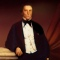
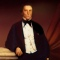

De Vijf Takken
Van de vijf takken, A, B, C, D en E is tak B verreweg de grootste en wat nazaten betreft over de hele wereld verspreid. Aangezien de stamvader van deze tak toevallig ook vijf zonen met mannelijk nageslacht had, is deze tak geplitst in de takken B1 tot en met B5. De eerste takken (A en B) waren ten dele, respectievelijk bijna geheel verindischt doordat veelal met Chinese of inlandse vrouwen getrouwd werd. Wanneer er niet getrouwd werd, werden de verwekte kinderen praktisch steeds erkend en/of gewettigd c.q. geadopteerd. De takken D en E zijn langs mannelijke lijn geheel uitgestorven.
De verindisching van de takken A en B had een achteruitgang op de maatschappelijke ladder tot gevolg. De kinderen bleven in Indië en gingen dus ook alleen daar naar school. Dat betekende dat zij op de arbeidsmarkt in minder betaalde baantjes terecht kwamen, want de beter betaalde banen (bij het gouvernement) bleven gereserveerd voor hen die in Nederland onderwijs en/of in het bezit waren van het Radikaal. Bij Koninklijk besluit van 1825 kreeg de koning de mogelijkheid om personen die niet in Nederland waren opgeleid, toch toe te laten tot de hogere ambtenaarsrangen (dit is het zogenaamde Radikaalstelsel). Deze toelating geschiedde op grond van eigen opvoeding en achtergrond. In 1864 werd het Radikaal/stelsel opgeheven. Er kwam een Groot/Ambtenaars/examen, dat jaarlijks zowel in Den Haag als Batavia werd gehouden.
Er waren destijds nauwe banden tussen de takken. Behalve het feit dat neven en nichten met elkaar trouwden, werd er veel bij elkaar gelogeerd, bijvoorbeeld in het landhuis op Dramaga. Verschillende kinderen zijn geboren op de onderneming van een broer of zusters van hun ouder. Ook verschillende familieleden zijn bij elkaar begraven op het gezamenlijke familiekerkhof.
De familie is de geschiedenis ingegaan als een familie van landheren en planters. Hoewel dat van toepassing was op alle takken, spande tak C de kroon omdat daarin planters voorkwamen die dit beroep gedurende vijf generaties uitoefenden. Het is de ene tak beter vergaan dan de andere, vandaar dat wel gesproken werd van de gouden en zilveren takken van de familiestamboom.
Bekende Van Motman landen in de omgeving van Buitenzorg waren:
• Djamboe
• Dramaga
• Djasinga
• Bolang
• Roempin
• Trogong
• Semplak
• Kedong Dadak
• Tjikoleang en Nanggoeng
In Bantam waren dat:
• Tjikandi Oedik
• Tjikandi Ilir
In de Preanger waren dat:
• Pasir Langkap
• Goenoeng Rosa
Van verschillende andere landen zoals Tjampea en Pondok Gedeh was een Van Motman huurder c.q. een ander familielid administrateur. De persoonsgegevens van de leden van alle takken zijn primair afkomstig uit een publicatie van mr. P.C. Bloys van Treslong Prins in ”De Indische Navorscher” en uit het boek over Willem Vincent Helvetius van Riemsdijk. Die van de takken A en B zijn voornamelijk aangevuld met gegevens van het Indisch Familie Archief, krantenknipsels, bidprentjes, mededelingen van de leden van de takken zelf en internet. Ten aanzien van de laatstgenoemde gegevens is een voorbehoud op zijn plaats. Zijn alle kinderen wel erkend door hun vader en dragen zij dus terecht de naam Van Motman?


 
